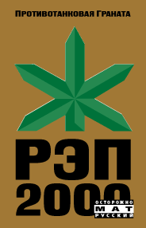
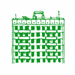
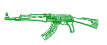

ПРОТИВОТАНКОВАЯ ГРАНАТА

РЭП2000
САЛКИ п/г Катафала (мп3)
ТЕКСТИЛИ п/г Червяк (мп3)
БРАТ ХАМЗАТ амир п/г Ильяс (мп3)
УСТУУ ХУРЭЭ Даша п/г Круче (мп3)
музыка, аранжировка п/г Калашник
запись НЕТСЛОВ
+бонус трэки
КАТАКОМБЫ п/г Томаз (мп3)
СЛАБО нью 2006 п/г Фалько/Катала (мп3)
ИЛЬЯ МУРОМЕЦ нью п/г Катала/Фалько (мп3)
ПГ-спасибо: савелию говоркову, высоцкому, любэ, кыргысу, бычарке, т.и.к. мутантову, корешкам, малому, салману, и мамам,
утину, оранжевому, рыбцу, залуппе, хотею, карену, годзилле, деду, терминатору, самоделкину, мр. кредо, нашей местности,
проводнику, большому, коробкам, шагонару, папе, монгулеку, спонсорам, буяну, цифрам, одессе, цирку, жиру, качалке, боке,
киче, юрте, блядище, хомусу, брату, злыдням, тупаку, чехам, манаху, северному, доктору, хурешу, капитану, орлую ...
САЛКИ п/г Катафала (текст п/г Фалько)
Кто работает в Афише,
А кто курит шишки,
Ему это по карману,
Ну, а мне по барабану,
Я - пг Каталкин.
У меня свои фишки.
Я не хожу на работу,
Не плету интрижки,
Я парень беззаботный,
Спроси меня - кто ты?
Я - пг Каталкин.
У меня свои фишки.
Кто ходит в кабак,
Кто курит табак,
Вонючие сижки,
Жалкие умишки,
Ну а я - пг Каталкин.
У меня свои книжки.
Кругом олигархи,
Все делают бабки,
Насрать на запарки,
Я - парень жаркий,
Я - пг Каталкин.
У меня свои салки.
|
Вы - звери в зоопарке,
Вы - рыбы на рыбалке,
Вы - трупы в катафалке,
Ну, а мне вас жалко,
Ведь я - пг Катало.
Если что, так в ебало.
Я - пг Катала,
Но мне этого мало,
У меня своя слава,
Я - король бала,
Я - острое жало,
Я - пг Катала.
Я - пг Катало.
Я - пг Катало.
|
ТЕКСТИЛИ п/г Червяк (текст п/г Фалько)
Двухтысячный год, Текстильщики, осень.
Мы вышли из дому, нас было восемь.
Впереди шел я, Антон Черняк.
Навстречу мне Вася, по прозвищу Хряк.
Здорово, Антоха, он мне говорит,
Сейчас мы посмотрим, ты наш или жид.
Чего там смотреть, я говорю,
А сам из штанов свой хуй достаю.
И сразу по хрюслу хуем ему шмяк.
Откинул копыта по прозвищу Хряк.
Двухтысячный год, Текстильщики, осень.
Мы вышли из дому, нас было восемь.
Впереди иду я, Черняк Антон.
Навстречу мне Хаим, по кличке Флакон.
Здорово, Антоха, он ржет надо мной,
Сейчас мы узнаем, кто из нас гой.
Узнаешь, узнаешь, говорю ему я,
Как в пасть твою хлынет моя малафья.
И сунул в ебальник свиной свой батон.
Отдал богу душу по кличке Флакон.
Двухтысячный год, Текстильщики, осень.
Мы вышли из дому, нас было восемь.
Впереди шел я, Антон Черняк.
Навстречу Салман, по кличке Червяк.
Здорово, брателло, давай мне ответ,
Кто ты на деле, моджахед или нет.
Сейчас, шайтан, узнаешь меня ты.
Увидишь, душман ты, мою гранату.
И я снял штаны, разорвал рубаху.
Червяк в тот же миг улетел к аллаху.
|
Двухтысячный год, Текстильщики, осень.
Мы вышли из дому, нас было восемь.
Впереди иду я, и тут, верь не верь,
Навстречу Савелий, по прозвищу Зверь.
Здорово, Зверюга, я начал первым,
Сейчас мы проверим, у кого крепче нервы.
Он выпростал письку, я показал яйцо.
Он встал на колени, поднял к небу лицо.
Спасибо, на фене сказал он Богу,
Что ты, батяня, мне указал дорогу.
Я узнал, что в России есть такие кабаны,
Перед которыми вянут афганцы и братаны.
Я узнал, что в России есть такие слоны,
Перед которыми в падлу снимать штаны.
Двухтысячный год, Текстильщики, осень.
Мы вышли из дому, нас было восемь.

|
БРАТ ХАМЗАТ амир п/г Ильяс (текст п/г Фалько)
Двухтысячный год, Ичкерия, полвторого,
Я докурил своего косого.
Я взял АКМ, обойму, муху,
Огни в нашем селении уже потухли.
Со мною мой брат по имени Хамзат,
Мой брат Хамзат и его автомат.
Бисмиллахи-Рахьмани-Рахьим!
Сегодня они бюдут подыхать моледым.
Бисмиллахи-Рахьмани-Рахьим!
Покажем им Алды, Алхан-Юрт, Карамахи.
Мы вышли из дома - впереди мост,
За мостом гора, за горой фашистский пост.
Мы шли не таясь, шли в полный рост,
Впереди гора, а за ней блокпост.
Час-полтора, и вот видна гора,
Мы обнялись. Акбар Аллах!
Аллах за вайнахов, все в наших руках.
Бисмиллахи-Рахьмани-Рахьим!
Покажем им Алды, Алхан-Юрт, Карамахи.
Бисмиллахи-Рахьмани-Рахьим!
Покажем им Алды, Алхан-Юрт, Карамахи.
Вот он пост, на посту солдат,
Брат первым достал свой автомат.
"Алла акбар!" - брат заорал,
Солдат упал, автомат стрекотал.
Я бросил гранату. Взрыв. Дым.
Брат первый из нас ушель моледым.
Вошель в дым и не вышель живым.
Я бросил гранату, она виновата
В смерти брата моего Хамзата.
|
Построить кошару мечтал брат когда-то,
Но сегодня проебался я, убиль брата.
Бисмиллахи-Рахьмани-Рахьим!
Сегодня мой брат ушел моледым.
Бисмиллахи-Рахьмани-Рахьим!
Теперь мой черед идти вслед за ним.
Я выбросил автомат и пустился в пляс,
Фашистские пули мне не указ!
Ведь это наши горы, они возьмут меня,
Но вдруг я увидел с собой рядом коня.
Бисмиллахи-Рахьмани-Рахьим!
Аллах меня хочет оставить живым.
Бисмиллахи-Рахьмани-Рахьим!
Аллах меня хочет оставить живым.
Я вскочил в седло, крикнул "Хей!", унесся прочь,
На прытком коне в вайнахскую ночь.
Как пули летят вайнахские кони,
И вот уже погасли вдали огни погони,
Потому что я в Ножай-Юртовском районе,
Потому что я на коне, в своем районе.
Потому что я наконец в своем районе.
Бисмиллахи-Рахьмани-Рахьим!
Брат убиль солдата, я вернулся живым.
Бисмиллахи-Рахьмани-Рахьим!
Замочил брата, вернулся живым.

|
УСТУУ ХУРЭЭ Даша п/г Круче (текст Д.А.Ф.)
Мы начинали свой путь
в конце лета из москвы
и трое сутак ехали
спали в купе
снаружи - бабушка рассия
березки ровнаю стеной
на стаянках местные
таргавали едой
Мы приехали в ачинск
там никто не встречал
снова в поезд и вот
принял нас абакан
добрый пухленький мент
паспарта праверял
Улыбался... в туве
многа дуд абещал
в абакане нас тоже
никто не встречал
мы сами взяли пару тачек
и паехали в кызыл
кызыл - это тува
там все иначе гаварят,
там у всех такие лица,
как будта ани манголы
но тувинцы не манголы,
тувинцы - это тюрки
единственные тюрки,
каторым нравится буддизм
в соракчетвертом их свабодных
загреб савок пазорный
раасхуярил все дацаны
истребил всех лам
Припев:
устуу хурээ
азначает - главный храм
аднаименный фестиваль
за восстановление
из кызыла на машинах
нас перевезли в чаадан
и таво на машине
двенадцать часов
в чаадане на развалинах
устуу-хурээ
састаялся фестиваль
за восстановление
в туве многа зон
очень-очень многа зон
там такое каличество зон,
чтоо проста пиздец
там каждый первый бывал
за то, что многа бухал
многа водки бухал
и друзей убивал
зато какая там природа
вакруг саяны-горы
малочные азера
мнагаабразье трав
в аблаках арел витает
ва степи табун скакает
микроавтобус ажидает
мы паедем на абед
если в юрту заглянуть
можна сразу сблевануть
даже чай с бараньим жиром
а в сталовай харашо
в конце вручили нам барана
за то, что мы играли,
пели и плясали
в рамках фестиваля
|
Припев
на фестивале многа музыки
этнической звучало
а мы лабали реггей
тувинцев раскачало
я на сцене танцевала
для тувинцев зажигала,
но тувинцы не танцуют -
ани гарлавики
тувинцы очень крута
владеют сваим горлом
и народными инструментами
тоже харашо
для девчонак местных важна
чтоб жених умел играть
на народных инструментах
горлам петь, стихи читать
мы взбирались на саяны
там такие есть паля
где китайцы в прошлам веке
пасадили канапля
тувинцы с черными руками
тяжелыми карабками
дика узкими глазами
очень маленькими насами
четыре дня на фестивале
мы прибывали в чаадане
а патом из чаадана
нас перевезли в кызыл
там был гала-канцерт
мы сабрали стадион
снова реггей лабали
и тувинцев качали
еще нас шаманы ачищали
били в бубны, вакруг скакали
патом в буддисты пасвящали
харошую карму абещали
Припев
а в кызыле тоже крута
там есть главный енисей
каторый делится на два
маленький и бальшой
а еще там точка есть
супер специальная
где тувинцы маладые
атдыхают вечерами
ано атмечено треногай
настаящее места силы
рядам мощный пастамент
реальный центр азии
патом на тачке через горы
абратна в абакан
трое сутак в поезде
и вот мы в маскве
так завершилася паездка
на фестиваль устуу хурээ
Припев
|
КАТАКОМБЫ п/г Томаз (текст Фалько, музыка Томаз)
Я, спустившийся с гор горделивый абрек,
Спою вам последнюю песню, свой последний трек,
Пусть моя предсмертная молитва перед жестокой битвой
Перережет вам горло как железной бритвой.
Всем моим ученикам вот моя новая фетва,
С сегодняшнего дня начинается духовная жатва,
Русским рэпперам не даем больше никакой пощады,
Убиваем их, применяя ножи, пули, язвы, яды.
Пусть бросают на нас бомбы, мы уйдем в катакомбы
Пусть введут свои танки, мы взорвем дома и банки
Пусть бросают на нас бомбы, мы уйдем в катакомбы
Пусть введут свои танки, мы взорвем дома и банки
Это вам не русский хип-хоп, а мой горский гоп-стоп,
Я ограблю ваши хазы, а вам пущу по пуле в лоб,
На куски порублю топором ваши кресты, иконы,
Ваших телок, дочерей украду себе я в жены.
Короче, рэпперки, с детства я мочил таких лохов, как вы,
Далеко вам, мудачки, до скоморохов и шутов гороховых,
Бледные копии друг друга и звезд телеэкрана,
Слушайте перед вечным сном мою суру из Корана.
Пусть бросают на нас бомбы, я уйду в катакомбы
Пусть введут свои танки, я взорву дома и банки
Пусть бросают на нас бомбы, я уйду в катакомбы
Пусть введут свои танки, я взорву дома и банки
Я родом с юга, вырос в Ростове, приехал в Москву,
Я любого москаля на куски легко порву,
Руки в боки, я иду-бреду по городу Москве,
Моя волына на кармане как всегда при мне.
Мне погода похуй, когда охота тусануть,
По Тверской, как обычно, вчера лежал мой путь,
Здесь мой привычный маршрут, он был всегда таков,
Блинчики, Русское бистро или Елки-палки по.
Карман мне греют баксы, я захожу на обмен,
Впереди телка-метелка, эй, чикса, мой хуй до колен,
А яйца с мячик, я крутой ростовский хачик,
Не хочешь, блядь, кавказский хуй пососать?
Но тут дверь открывается, внутрь врываются ее дружки,
Трое придурков в модных прикидах, рэпперки-пидарки,
Эй, черножопый, это наша телка, вали, пока живой,
Не то мы отмудохаем тебя нашей всей братвой.
У меня с собой волына, ну, я волыну вынул, мой характер крут,
Не надо нарушать никогда мой привычный маршрут,
Бах-бах-бах, ну, вас, падлы, нах и я был таков,
Блинчики, Русское бистро или Елки-палки по.
|
Пусть бросают на нас бомбы, я уйду в катакомбы
Пусть введут свои танки, я взорву ваши банки
Пусть бросают на нас бомбы, я уйду в катакомбы
Пусть введут свои танки, я взорву ваши банки
Когда видишь рэпперов, становись в ряды скинов!
Ты черный скин, бритый наголо, на плечах подтяжки,
На кулак твой намотан ремень с железной пряжкой,
Ты давишь им яйца, вышибаешь зубы, выбиваешь глаза,
если они против, то ты - за.
Не знаете, где ваши корни, подражаете жирным ниггерам,
Встаете в очередь раком перед продюсером-пидером,
Лижете сраку мистерам-твистерам с Дикого Запада,
Эй, козлы, я зажимаю нос от вашего петушиного запаха.
Безмозглые дети, сопляки, слабаки-молокососы,
Давайте занимайте место в очередь ко мне за отсосом,
МТВ, Пепси-кола, Макдональдс, Стритболл,
Я загоню вам в белые жопы свой осиновый кол.
Пусть бросают на нас бомбы, я уйду в катакомбы
Пусть введут свои танки, я взорву ваши банки
Пусть бросают на нас бомбы, я уйду в катакомбы
Пусть введут свои танки, я взорву ваши банки
Я, спустившийся с гор горделивый абрек,
Спел вам последнюю песню, свой последний трек,
Пусть моя предсмертная молитва перед жестокой битвой
Перережет вам горло как железной бритвой.
|
Наверх
|